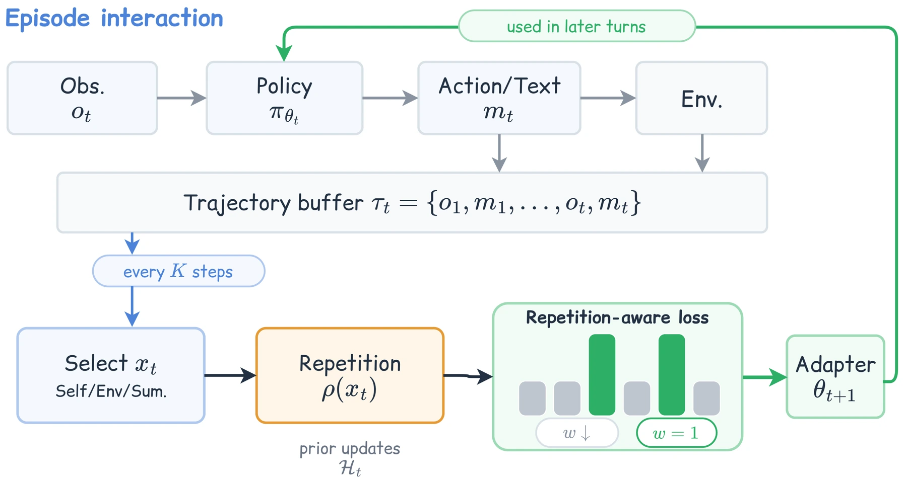
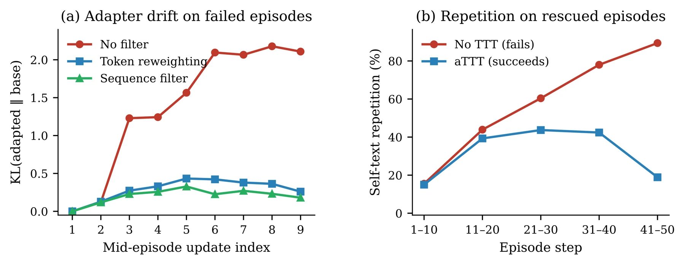

An agent can know how to solve a task and still lose it. As an episode lengthens, trajectories revisit states already explored, failed actions reappear verbatim, and strategies that worked twenty turns ago stop being sampled. The failure is not a missing capability; it is drift.
智能体有能力解决一个任务，却仍可能在过程中把它做砸。随着回合变长，轨迹不断回到已经探索过的状态，失败动作原样复现，二十步之前还有效的策略不再被采样。问题不在于能力缺失，而在于漂移。
Test-time training looks like the obvious remedy: update the weights on whatever the agent just experienced. But in a multi-turn episode this is not a one-shot adaptation to a fixed prompt. Each gradient step changes the policy that generates the next batch of training text, so the agent becomes its own data source.
测试时训练看起来是现成的解法：用刚刚发生过的经验更新权重。但在多回合任务中，这不是对固定输入的一次性适配——每一步梯度都会改变生成下一段训练文本的策略，智能体由此变成了自己的数据来源。
That loop is the object of study here. It helps while the episode keeps producing new information and it hurts once the agent is stuck generating the same text. Agentic Test-Time Training separates the two cases at token level and reports +5.0 points on ALFWorld and +4.9 on SWE-bench Lite for 1.9× the cost of not training at all.
本文研究的正是这个闭环。回合持续产出新信息时它带来帮助，智能体卡住、反复生成相同文本时它放大偏移。Agentic Test-Time Training 在 token 层面区分这两种情况，在 ALFWorld 上提升 5.0 个点、在 SWE-bench Lite 上提升 4.9 个点，代价是不做测试时训练时的 1.9 倍。
Continuous TTT in an agent episode is a self-training loop: every update changes the policy that produces the next update’s training text, so whether it helps depends on whether that text is new.
智能体回合中的连续测试时训练是一个自训练闭环：每次更新都会改变生成下一段训练文本的策略，因此有用与否取决于这段文本是否新鲜。
aTTT downweights the loss on tokens that appear in n-grams already used by earlier updates and leaves novel tokens fully weighted — a per-token novelty filter, not an on/off switch on whole updates.
aTTT 降低此前更新已使用过的 n-gram 内 token 的损失权重，新 token 保持满权重：这是逐 token 的新颖性过滤，而非对整次更新做取舍。
+5.0 points on ALFWorld and +4.9 on SWE-bench Lite for 1.9× the no-TTT cost, with gains concentrated where the model already had the competence and drifted away from it.
ALFWorld +5.0、SWE-bench Lite +4.9，开销为不做测试时训练的 1.9 倍；收益集中在模型本已具备能力、却在长轨迹中漂移的任务上。
The loop that test-time training creates测试时训练形成的闭环
Existing LLM test-time-training methods mostly adapt once, to a fixed input. An agent episode is different: the model acts, the environment responds, the model trains on that text, and the updated model acts again. The training distribution is now a function of the parameters being trained.
已有的大模型测试时训练方法大多只针对固定输入适配一次。智能体回合不同：模型行动，环境回应，模型在这段文本上训练，更新后的模型再次行动——训练分布变成了被训练参数的函数。
This is fine while the episode is informative. It is corrosive once the agent stalls: a stuck policy emits near-identical trajectories, training on them sharpens the same wrong attractor, and the next rollout repeats it more confidently. Novelty, not volume, is what makes an update worth making.
回合仍在提供信息时这没有问题；一旦智能体卡住就会腐蚀自身：停滞的策略输出近乎相同的轨迹，在这些轨迹上训练只会强化同一个错误吸引子，下一次采样更自信地重复它。决定一次更新是否值得的不是数据量，而是新颖性。
aTTT turns that into a weighting rule. For each token in an update, the method checks whether it occurs inside an n-gram already used by a previous update; if so, its contribution to the loss is reduced, and novel tokens keep full weight. Repetition is measured against the update history of the current episode, so the filter tracks this agent’s degradation rather than a global statistic.
aTTT 把这一点写成加权规则：对更新中的每个 token，检查它是否出现在此前某次更新已使用过的 n-gram 内，若是则降低其对损失的贡献，新 token 保留满权重。重复性针对当前回合的更新历史统计，因此过滤器跟踪的是这个智能体自身的退化，而非某个全局统计量。


Three ways to decide what to learn from三种决定学什么的方式
What counts as experience is a separate design choice, and the paper treats the update signal as a variable: the agent’s own generated trajectory, the observations returned by the environment, or a summary of the interaction written by the model. Each has a different failure mode.
把什么算作经验是另一个独立的设计选择。论文把更新信号当作变量处理：智能体自己生成的轨迹、环境返回的观测，或模型自己撰写的交互摘要。三者的失效方式并不相同。
Self-generated text is the most available and the most dangerous, because it is exactly the channel through which a bad decision propagates into the weights. Environment feedback is grounded but sparse or delayed. Summaries compress a long history into something trainable but inherit the summarizer’s errors. The weighting applies to all three.
自生成文本最容易获得，也最危险——错误的决策正是通过这条通道进入权重。环境反馈有事实依据，但可能稀疏或延迟。摘要把长历史压缩成可训练的形式，却继承了摘要器本身的错误。加权机制对三者同样适用。
The evaluation puts that difference under pressure by contrasting immediate with delayed feedback. ALFWorld returns a household-task signal after each action; SWE-bench Lite only verifies once a patch is written and the tests run. A method that learns from repetition should behave differently in the second setting, where the same code can be retried many times before any verdict arrives.
评测用即时反馈与延迟反馈的对照放大了这种差异：ALFWorld 在每个动作之后立刻给出家居任务信号，SWE-bench Lite 只在补丁写完、测试跑完之后才验证。依赖重复性筛选的方法在第二种场景下应当表现不同，因为同一段代码可能在任何判决出现之前被反复尝试。
What the gains are, and what they are not收益是什么，又不是什么
Baselines cover the obvious alternatives: ReAct with no adaptation at all, static adaptation computed before the rollout, and unfiltered online training that updates on everything. A fourth comparison drops whole repeated updates instead of reweighting tokens inside them — the coarse version of the same idea.
基线覆盖了几种显而易见的替代方案：完全不适配的 ReAct、在 rollout 之前算好的静态适配，以及什么都学的无过滤在线训练。第四组对照直接丢弃重复的整次更新，而不是在更新内部重新加权 token——这是同一思路的粗粒度版本。
Unfiltered training is the telling baseline because it isolates the cost of ignoring novelty. Dropping entire updates is the other natural remedy and is strictly blunter: an update can be partly repetitive and still contain the one new observation that matters. aTTT keeps that observation and discounts only the repeated part.
无过滤训练最能说明问题，它把忽略新颖性的代价单独剥离出来。丢弃整次更新是另一种自然的补救，但明显更粗暴：一次更新可能部分是重复的，却仍含有唯一重要的新观测。aTTT 保留这个观测，只对重复部分打折。
The reported improvements — up to 5.0 points on ALFWorld and 4.9 on SWE-bench Lite, averaged over three seeds — come with a caveat the authors draw themselves. Gains concentrate on tasks within the model’s existing competence. aTTT preserves a capability that long trajectories erode; on this evidence it does not teach a capability the model lacked.
三个随机种子下的结果（ALFWorld 最高 +5.0、SWE-bench Lite +4.9）附带一个作者自己给出的限定：收益集中在模型已有能力范围内的任务。aTTT 保住的是长轨迹会侵蚀掉的能力；就现有证据而言，它并没有教会模型原本不具备的能力。


Preserving competence is not recursive self-improvement保住能力不等于递归自我改进
The honest framing is narrower than the RSI reading suggests. This is a bounded mechanism for keeping behaviour intact inside one episode, with per-episode LoRA adapters reset between tasks so that nothing accumulates across the benchmark.
准确的定位比 RSI 式解读要窄得多。这是一种让单个回合内的行为保持完整的有限机制：每个回合使用独立的 LoRA 适配器，任务之间重置，因此不会在基准上累积。
That design choice determines the interpretation. If improvements carried across tasks, you would be looking at learning; because adapters are reset, what is measured is resistance to drift. The 1.9× overhead is the price of that resistance, and it is a serving cost as much as a training one — the runtime LoRA updates have to happen while the episode is live.
这个设计决定了结果如何被解读。若提升能跨任务保留，那才是学习；因为适配器被重置，测得的其实是抗漂移能力。1.9 倍开销就是这种抗性的价格，而且它既是训练代价也是服务代价——运行时 LoRA 更新必须在回合进行中完成。
The open question is whether novelty is the right proxy. Token-level n-gram repetition is cheap and works here, but it cannot distinguish productive exploration from irrelevant variation: a genuinely new wrong turn and a genuinely new useful observation look identical to the filter. A better measure of whether an episode is still producing information would turn this from a safeguard into an adaptation signal.
尚未解决的问题是：新颖性是不是正确的代理指标。token 级 n-gram 重复便宜且在此有效，却无法区分有产出的探索与无关的变化——一次全新的错误尝试和一条全新的有用观测，在过滤器看来完全一样。若能更好地判断一个回合是否仍在产出信息，这套机制就能从兜底手段变成真正的适配信号。
Paper & authors
No Time Like the Present: Agentic Test-Time Training for LLM Agents
arXiv 2026
Cite this work
@misc{wang2026timelikepresentagentic,
title = {No Time Like the Present: Agentic Test-Time Training for LLM Agents},
author = {Yanbo Wang
and Jinhua Hao
and Yuze Shi
and Kun Yuan
and Ming Sun},
year = {2026},
eprint = {2607.03441},
archivePrefix = {arXiv},
primaryClass = {cs.LG},
url = {https://arxiv.org/abs/2607.03441}
}